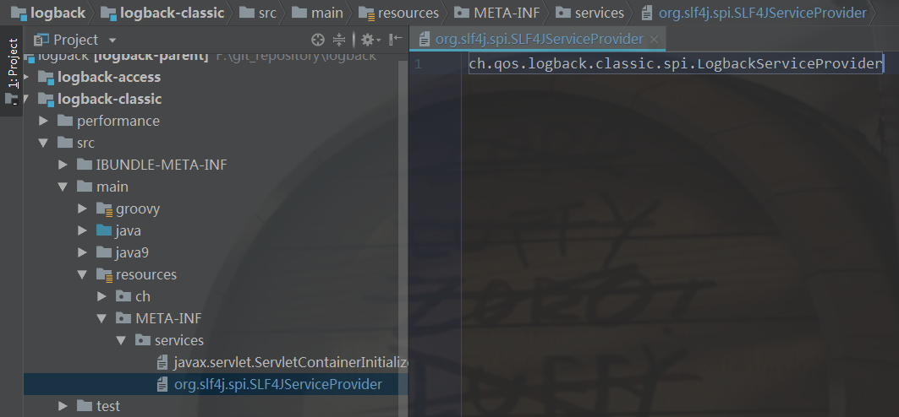

回顾
上一篇大致的浏览了一下获取一个logger，所干的事情，这里大概先回顾一下
我们先来了解其中最核心一步：第二步，代码如下
下面的代码可以看做两部分：
第一部分：获取一个serviceLoader
第二部分：serviceLoader循环得到的providers都放到数组里面1
2
3
4
5
6
7
8
9
10private static List<SLF4JServiceProvider> findServiceProviders() {
// 第一部分
ServiceLoader<SLF4JServiceProvider> serviceLoader = ServiceLoader.load(SLF4JServiceProvider.class);
// 第二部分
List<SLF4JServiceProvider> providerList = new ArrayList<SLF4JServiceProvider>();
for (SLF4JServiceProvider provider : serviceLoader) {
providerList.add(provider);
}
return providerList;
}
所以重要的还是第一部分如何做到的，展开代码可以看见ServiceLoader其实是java.util提供的一个工具类
这个类最大的作用就是去获取文件目录“META-INF/services/”下面的相关配置，我们来梳理一下主要的逻辑：
主要代码如下1
2
3
4
5
6
7
8
9
10
11
12
13
14
15
16
17
18
19
20
21
22
23
24
25
26
27
28
29
30
31
32
33
34
35
36
37
38
39
40
41
42
43
44
45
46
47
48
49
50
51
52
53
54
55
56
57
58
59
60
61
62
63
64
65
66
67
68
69
70
71
72
73
74
75
76
77
78
79
80
81
82
83
84
85
86
87
88
89
90
91
92
93
94
95
96
97
98
99
100
101
102
103
104
105
106
107
108
109
110
111
112
113
114
115
116
117
118
119
120
121
122
123
124
125
126
127
128
129
130
131
132
133
134
135
136
137
138
139
140
141
142
143
144
145
146
147
148
149
150
151
152
153
154
155
156
157
158
159
160
161
162
163
164
165
166
167
168
169
170
171
172
173
174
175
176
177
178
179
180
181
182
183
184
185
186
187
188
189public final class ServiceLoader<S>
implements Iterable<S>
{
// 规定必须在目录"META-INF/services/"下的文件才会被扫描到
private static final String PREFIX = "META-INF/services/";
// The class or interface representing the service being loaded
private final Class<S> service;
// The class loader used to locate, load, and instantiate providers
// 关于ClassLoader可以看文章： https://zhuanlan.zhihu.com/p/51374915
private final ClassLoader loader;
// The access control context taken when the ServiceLoader is created
private final AccessControlContext acc;
// Cached providers, in instantiation order
private LinkedHashMap<String,S> providers = new LinkedHashMap<>();
// The current lazy-lookup iterator
private LazyIterator lookupIterator;
public static <S> ServiceLoader<S> load(Class<S> service) {
// 1. 当前线程的ClassLoader作为参数
ClassLoader cl = Thread.currentThread().getContextClassLoader();
// 2. 去调用重载方法
return ServiceLoader.load(service, cl);
}
public static <S> ServiceLoader<S> load(Class<S> service,
ClassLoader loader){
// 3.创建 ServiceLoader
return new ServiceLoader<>(service, loader);
}
private ServiceLoader(Class<S> svc, ClassLoader cl) {
// 4. service就是我们的 SLF4JServiceProvider.class
// ClassLoader为当前线程的
service = Objects.requireNonNull(svc, "Service interface cannot be null");
loader = (cl == null) ? ClassLoader.getSystemClassLoader() : cl;
// 这里是访问权限设置，一般来说是null（不限制访问）
acc = (System.getSecurityManager() != null) ? AccessController.getContext() : null;
// 5. 重新加载
reload();
}
public void reload() {
// 6. 清空providers
providers.clear();
// 7. 创建一个懒加载迭代器
lookupIterator = new LazyIterator(service, loader);
}
private class LazyIterator
implements Iterator<S>
{
Class<S> service;
ClassLoader loader;
Enumeration<URL> configs = null;
Iterator<String> pending = null;
String nextName = null;
private LazyIterator(Class<S> service, ClassLoader loader) {
// 8.迭代ServiceLoader（因为ServiceLoader类实现Iterable接口，所以可迭代）
// 实际是在迭代service对象（但是service对象没有实现Iterable接口，具体怎么迭代？往下看）
this.service = service;
this.loader = loader;
}
private boolean hasNextService() {
if (nextName != null) {
return true;
}
if (configs == null) {
try {
// 12. 当第一次循环的时候去获取路径下的配置文件
String fullName = PREFIX + service.getName();
if (loader == null)
configs = ClassLoader.getSystemResources(fullName);
else
configs = loader.getResources(fullName);
} catch (IOException x) {
fail(service, "Error locating configuration files", x);
}
}
while ((pending == null) || !pending.hasNext()) {
if (!configs.hasMoreElements()) {
return false;
}
pending = parse(service, configs.nextElement());
}
// 13.拿到配置中需要加载的类名
nextName = pending.next();
return true;
}
private S nextService() {
if (!hasNextService())
throw new NoSuchElementException();
String cn = nextName;
nextName = null;
Class<?> c = null;
try {
// 17. 反射类
c = Class.forName(cn, false, loader);
} catch (ClassNotFoundException x) {
fail(service,
"Provider " + cn + " not found");
}
if (!service.isAssignableFrom(c)) {
fail(service,
"Provider " + cn + " not a subtype");
}
try {
//18. 创建反射实例
S p = service.cast(c.newInstance());
// 19.放入list里面，第二次循环就不需要去读配置了
providers.put(cn, p);
// 20.返回实例
return p;
} catch (Throwable x) {
fail(service,
"Provider " + cn + " could not be instantiated",
x);
}
throw new Error(); // This cannot happen
}
public boolean hasNext() {
if (acc == null) {
return hasNextService();
} else {
PrivilegedAction<Boolean> action = new PrivilegedAction<Boolean>() {
public Boolean run() { return hasNextService(); }
};
return AccessController.doPrivileged(action, acc);
}
}
public S next() {
//16. 不论是什么权限都是去nextService()反射出类
if (acc == null) {
return nextService();
} else {
PrivilegedAction<S> action = new PrivilegedAction<S>() {
public S run() { return nextService(); }
};
return AccessController.doPrivileged(action, acc);
}
}
public void remove() {
throw new UnsupportedOperationException();
}
}
// 9.当开始循环serviceLoader，进入这里
public Iterator<S> iterator() {
return new Iterator<S>() {
// 10. 初始化后的第一次循环这里是空的
Iterator<Map.Entry<String,S>> knownProviders
= providers.entrySet().iterator();
public boolean hasNext() {
if (knownProviders.hasNext())
return true;
// 11. 初始化后的第一次循环会到这里来
return lookupIterator.hasNext();
}
public S next() {
// 14. 到这里去拿配置的类
if (knownProviders.hasNext())
return knownProviders.next().getValue();
// 15.第一次循环还没有反射创建类，所以会先去反射
return lookupIterator.next();
}
public void remove() {
throw new UnsupportedOperationException();
}
};
}
/*其他代码此处省略*/
}
关于ClassLoader
参考：老大难的 Java ClassLoader 再不理解就老了
每个类都会标记他是由哪一个ClassLoader加载的；
所以我们可以通过getContextClassLoader()方法获取到；
其实在JVM的众多加载其中，AppClassLoader是直接面向我们用户的加载器，它会加载 Classpath 环境变量里定义的路径中的 jar 包和目录。我们自己编写的代码以及使用的第三方 jar 包通常都是由它来加载的；
我们也可以通过 ClassLoader 类提供的静态方法getSystemClassLoader() 得到
这就是为什么在代码中，会一句代码来对加载器进行检查： loader = (cl == null) ? ClassLoader.getSystemClassLoader() : cl;
找到配置
根据上面的分析，我在”\logback\logback-classic\src\main\resources\META-INF\services\”路径下，找到了名为org.slf4j.spi.SLF4JServiceProvider文件（文件直接以类名命名，以类名为搜索条件，这个主意真好）。
文件里面的内容是： ch.qos.logback.classic.spi.LogbackServiceProvider；

同时我也去看了看 log4j2 的配置文件，也有一个名为org.slf4j.spi.SLF4JServiceProvider的文件。
内容是：org.apache.logging.slf4j.SLF4JServiceProvider
也就是说，只要：
- 日志实现了
org.slf4j.spi.SLF4JServiceProvider接口； - 并在“META-INF\services\”路径下添加一个名为：“org.slf4j.spi.SLF4JServiceProvider”的文件
- 在里面添加
org.slf4j.spi.SLF4JServiceProvider接口的类全路径名称（如ch.qos.logback.classic.spi.LogbackServiceProvider）
我们就可以通过slf4j，轻松的使用不同的日志服务（只要日志服务做了以上步骤）
也可以说，Slf4j的Slf4j其实只是一个工具类，帮我们动态配置不同的日志服务，帮我们实现了组件和服务的解耦。
现在想起来，我们在项目中只是引用了slf4j和logback的包，却可以通过LoggerFactory.getLogger()轻松使用，
而不需要配置其他的（日志文件打印格式有默认的，不配置也可以的），原来是这么回事。